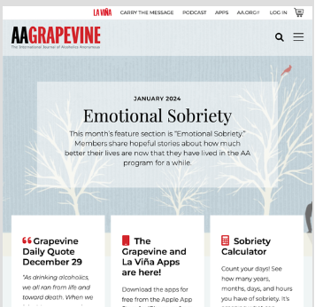
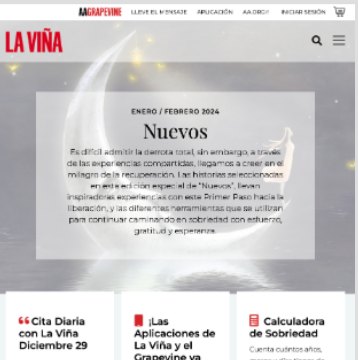

Revistas de Alcohólicos Anónimos

AA Grapevine es la revista internacional de Alcohólicos Anónimos. Escrita, editada, ilustrada y leída por miembros de AA[cite: 5].

El AA La Viña es el periódico internacional de Alcohólicos Anónimos. Escrito, editado, ilustrado y leído por miembros de AA[cite: 5].